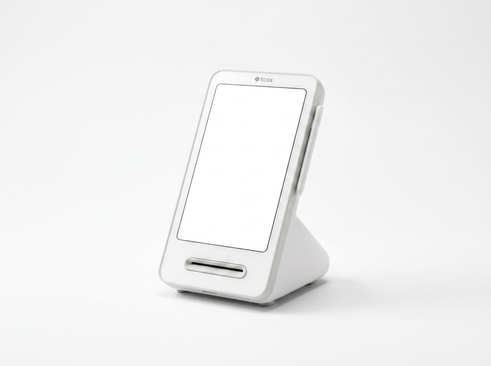
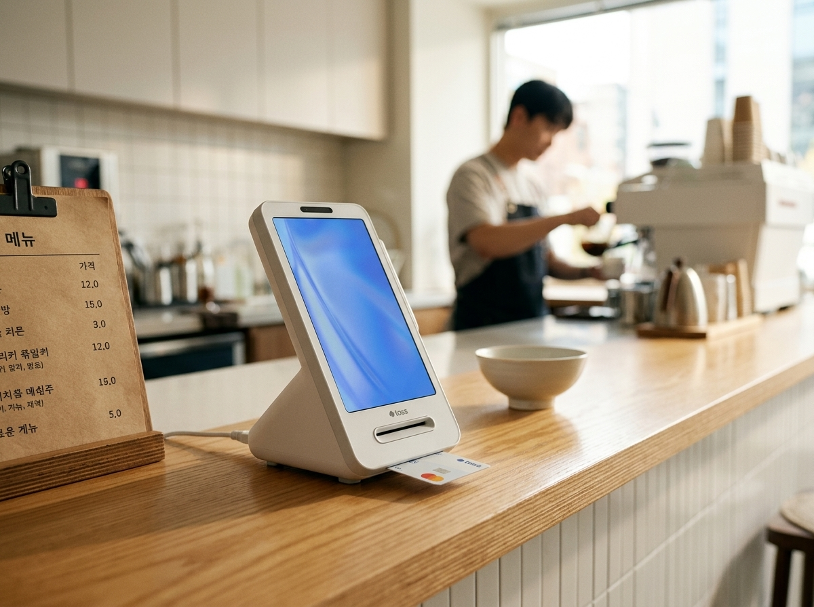
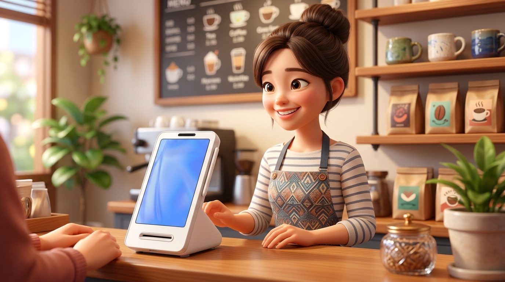

원고 「처음 창업하는 사장님이 토스단말기를 고르는 이유」(2,400자). 폴더: 업로드자료\2026\08\8월6일(목)_프리미엄필름12호_토스단말기 — 검수 후 네이버 예약발행 부탁드립니다.
| 애니 무드 | 토이스토리풍 픽사 3D (로테이션 1/8 — 다음 8/13 네이버=아톰 레트로 SF) |
| 메시지 | 셔터 올리고, 불 켜고, 단말기를 켠다 — 작은 가게의 하루가 시작되는 자리 |
| 타겟 | 첫 창업·좁은 카운터 카페·베이커리·테이크아웃, 간편결제 비중 높은 매장 |
| 표준 적용 | 15초 · 9:16 짤림無 · 밝은 첫프레임 · 제품 주인공 · 클라이막스 BGM · 한글 간판 배경 · 가격숫자 없음 |
누리네트웍스 내부 검수용 · 검색 비노출